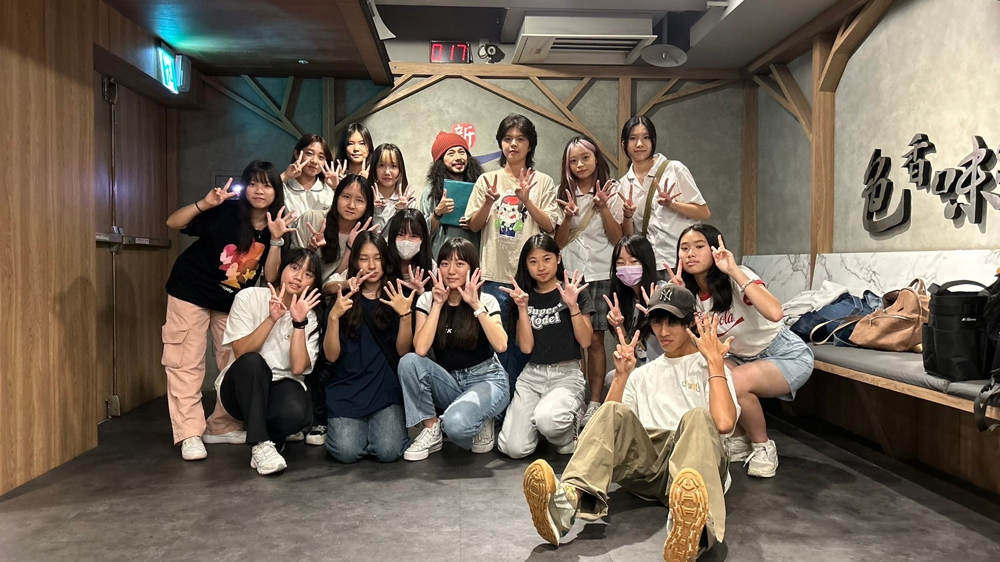
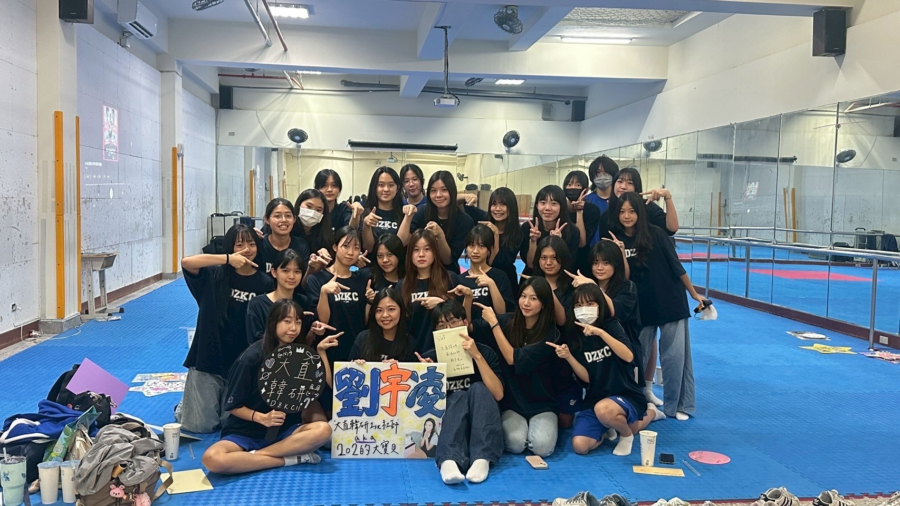

熱舞社
從 Hip Hop 菜鳥到舞台發光，高一這段路走得又累又帥。基礎練習是苦差事，但上台表演是讓我難以忘懷。不跳舞不會怎樣，但跳了舞，整個人都不一樣了！

韓研社
『創立韓研』這種地獄難度任務！雖然過程充滿了各種崩潰跟突發狀況，但回頭看，最珍貴的不是我們辦了多完美的活動，而是我們這群人聚在一起，把那些混亂變成了無可取代的革命情感。這份回憶，我打算記一輩子，你們誰也別想跑！
快來看看我在社團中的美好回憶!

從 Hip Hop 菜鳥到舞台發光，高一這段路走得又累又帥。基礎練習是苦差事，但上台表演是讓我難以忘懷。不跳舞不會怎樣，但跳了舞，整個人都不一樣了！

『創立韓研』這種地獄難度任務！雖然過程充滿了各種崩潰跟突發狀況，但回頭看，最珍貴的不是我們辦了多完美的活動，而是我們這群人聚在一起，把那些混亂變成了無可取代的革命情感。這份回憶，我打算記一輩子，你們誰也別想跑！